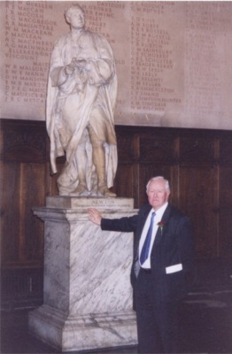

|
|
The Author
Vincent Moloney was born in Dublin in July 1940. Son of a pharmaceutical student and a farmer's daughter. They remained in Dublin until 1949, surviving the bombing in May 1941. The family moved to the country where his father, now qualified, managed a chemist shop. This new environment not only improved Vincent's health but also began to awaken an interest in nature. With only a basic education he enlisted in the British Army at the age of 18 as a radio operator on tanks and was posted to Germany. During those army years Vincent's interest in nature and the surrounding environment continued to grow. New fascinations were also noticed, especially electro-magnetic induction and black body radiation, when the machine gun barrel inside the tank turned white-hot casting shadows around the turret. Reading scientific books as a form of relaxation his independence of thought began harbouring new revolutionary ideas that went against the mainstream; that life arrived on a meteorite. Throughout the 1960s everything from Astronomy to Zoology was absorbed and it soon began to register that electricity, despite some evidence to the contrary, was one of the fundamental keys to all life. Married, with a young family to support, he joined Lloyds Bank in 1970 as a cashier and went back to (night) school to prepare for the banking exams. Leaving the bank after 29 years he began to look around for equipment to test out a theory, developed in the 1980s, concerning electro-magnetic induction coming in from near space. Retirement gave him the opportunity to become a full-time author, discoverer, and private researcher. His theory was right, that the moon could some how produce a current of electricity on the planet below when it passed through the earths magnetic field. The basis for this theory was a comprehensive understanding of Michael Faradays magnetic induction discovered in 1831. Vincent Moloney confirmed lunar induction by electronic detection in March 2000. Over the coming months, whenever the moon was in the correct position, the electric readings were entered in a log. It soon became apparent that his initial theory of the moon producing the electric currents for all life was wrong. The moon had a far greater role to play; the linking of the earth electrically with the sun and this was critical in the manufacture of water. Research continued alone and then one night a mistake revealed a new oscillating energy, from deep space, that had an irregular frequency. The readings from the two projects were combined and soon a whole new horizon began to emerge. Revolutionary new insights of the universe and how it holds together soon rewarded this independent character and research. He publishes his ideas here and in print form for the advancement of humankind.  Vincent, pictured next to a statue of Sir Isaac Newton Vincent Moloney is a member of the Royal Institution of Great Britain, The British Association for the Advancement of Science and the Save British Science Society. He has conducted all his own experiments, from his home. Some of the equipment which has led to his discoveries and theories is pictured below.
Old Victorian and Edwardian measuring machines
A variety of modern instruments for measuring natural electricity To find out how this equipment helped Vincent Moloney develop his discoveries and theories, follow the links to the OUT OF THE SHADOWS book.
|
|
Copyright 2003 belongs to John Vincent Moloney (DOB 16th July 1940 Dublin, Eire). Author, discoverer, private scientific researcher. All rights reserved. |